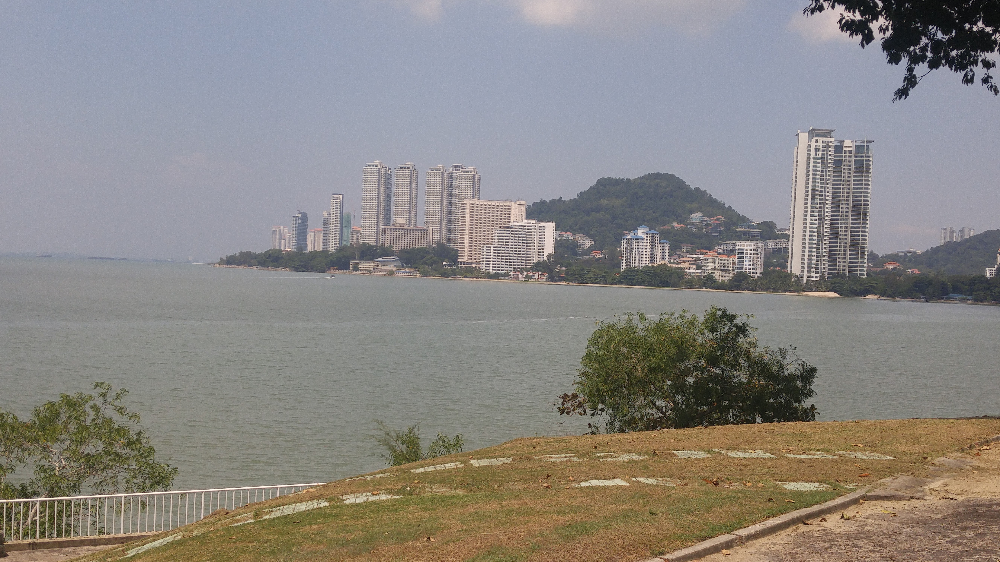

Go Back
Penang

Penang, sometimes referred to as "The Pearl of the Orient", is an island just off the Northwestern part of peninsular Malaysia. I stayed in Georgetown for 3 days back in 2017. The area is known for its UNESCO world heritage sights in Georgetown, it's hawker food, street art and pristine beaches. Penang is a great place to visit in Malaysia and offers plenty of fun activities for all sorts of different types of travellers. There are many religious and culturally significant buildings and areas here. There is also a fun nightlife scene and it's a great city to visit for backpackers. Penang is a great showcase of the diversity that exists in Malaysia and you can see the influence from various countries such as India, China and The UK. Here are some of my recommendations for a short visit to Georgetown, Penang.
Kek Lok Si Temple is the largest Buddhist temple in Malaysia, and is also an important pilgrimage centre for Buddhists from Hong Kong, the Philippines, Singapore and other countries in Southeast Asia. The entire complex of temples was built over a period from 1890 to 1930. The complex is impressive and combines architectural influence from places like China, Thailand and Myanmar (formerly Burma). The temple was free to visit back then and is worth checking out if you are in Georgetown.
There are many beaches in the area but one of the most popular ones is Batu Ferringhi Beach. The beach is idyllic and it's a great place to relax, have a coconut, swim and even do different water sports like jetskiing, kitesurfing etc.. There are many restaurants along the beach where you can have a drink or some food and let the afternoon go while taking in the peaceful, serene surroundings. You can use apps like Grab in Malaysia to get around or rent a motorbike. The beach was about 30 minutes away from Georgetown if I recall correctly. Malaysia's traffic is quite organized by Southeast Asian standards and I found it to be a good place to learn how to drive a motorbike before venturing onto more chaotic streets such as those in places like Vietnam or Cambodia.
The central area of Georgetown is quite walkable and there are plenty of things to do and see. The street art in Georgetown is unique and I enjoyed seeing different types of murals as well as unique metal works of art. You can see an example of this in the picture below. They use metal and bend it to make letters or images. There are many historic mansions in Georgetown such as the Pinang Peranakan Mansion or Georgetown Mansion. These are historicly significant sights that were previously owned by wealthy inhabitants of the area. Many of them operate like museums and offer insight to the history and culture of the area.
Penang is famous for its food, particularly its hawker stalls. One of the most famous dishes is Penang Char Koay Teow. This is a noodle dish served with shrimp and various vegetables. I recommend visiting some of the local food markets such as Chowrasta Market. You'll see some of the excellent food that Penang has to offer here. I stayed right by Little India so I had quite a few meals at various restaurants there. I remembered the food to be delicious and it's also an area worth exploring for restaurants. I wish I had taken more food photos in Penang because it truly is a great culinary destination. The food is one of the main reasons to visit!
For those interested in staying at hostels I quite enjoyed my stay at The Tipsy Tiger Hostel. The dorm rooms had beds that were in separate little cubicles so you had a bit of privacy (for hostel standards). The staff was fun and they had different events every night which usually involved games or competitions followed by a night of bar/ club hopping on the nearby street. Disclaimer, if you want a quiet hostel I wouldn't recommend this one. It is a party hostel and might be a lot for those looking for a quieter vacation. To add to the pros it's very well located near Little India, various markets including the Chowrasta Market, historic sights and nightlife.